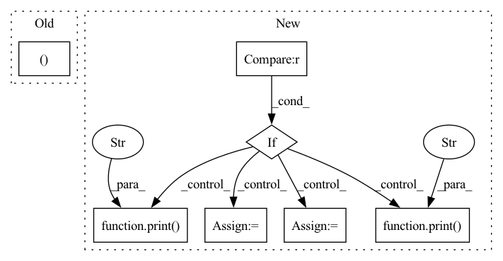

Pattern ID :31657
Before Change
def attack(self, _input: torch.Tensor, loss_fn: Callable = None,
target: Union[torch.LongTensor, int] = None, target_idx: int = None, **kwargs):
if len(_input) == 0:
return _input, None
if target_idx is None:
target_idx = self.target_idx
if loss_fn is None and self.loss_fn is None:
if target is None:After Change
total = 0
total_iter = 0
for i, data in enumerate(self.dataset.loader["test"]):
if total >= 100 :
break
_input, _label = self.model.remove_misclassify(data)
if len(_label) == 0:
continue
adv_input, _iter = self.craft_example(_input)
total += 1
if _iter:
correct += 1
total_iter += _iter
print("{} / {}".format(correct, total))
print("current iter: " , _iter)
print("succ rate: ", float(correct) / total)
if correct > 0:
print("avg iter: ", float(total_iter) / correct)
print("-------------------------------------------------" )
print()
def craft_example(self, _input: torch.Tensor, loss_fn: Callable = None,
target: Union[torch.LongTensor, int] = None, target_idx: int = None, **kwargs):In pattern: SUPERPATTERN
Frequency: 3
Non-data size: 7
Instances Fragment ID: 92328428
Project Name: ain-soph/trojanzoo
Commit Name: 5afae72db24844f2ecd29293bee298401d857ba4
Time: 2020-07-01
Author: ain-soph@live.com
File Name: trojanzoo/attack/adv/pgd.py
M Class Name: PGD
N Class Name: PGD
M Method Name: attack(1)
N Method Name: attack(5)
M Parent Class: PGD_Optimizer,Attack
N Parent Class: PGD_Optimizer,Attack
M File Name: trojanzoo/attack/adv/pgd.py
N File Name: trojanzoo/attack/adv/pgd.py
M Start Line: 28
M End Line: 47
N Start Line: 28
N End Line: 53
Before Change
logging.basicConfig(level=logging.INFO)
for unimplemented_feat in (
"compare",
"by_layer",
"by_types",
"save_graphs",
"impose" ,
):
if kwargs.get(unimplemented_feat):
raise NotImplementedError(After Change
)
summary.pretty_print()
if compare is not None :
if "," in compare:
compare = compare.split(",")
else:
compare = [compare]
print("Comparison Analysis:" )
for model_to_compare in compare:
compare_model_analysis = ModelAnalysis.create(model_to_compare)
_LOGGER.info(f"Running Performance Analysis on {model_to_compare}")
performance_summary = run_benchmark_and_analysis(
onnx_model=model_to_path(model_to_compare),
scenario=scenario,
)
compare_model_analysis.benchmark_results = [performance_summary]
summary_comparison_model = compare_model_analysis.summary(
by_types=by_types,
by_layers=by_layers,
)
print(f"Comparing {model_path} with {model_to_compare}")
print("Note: comparison analysis displays differences b/w models" )
comparison = summary - summary_comparison_model
comparison.pretty_print()
if save: Fragment ID: 92328961
Project Name: neuralmagic/deepsparse
Commit Name: f9c812958895f509c2c6c0194b839cb47c2faed8
Time: 2023-04-19
Author: rahul@neuralmagic.com
File Name: src/deepsparse/analyze.py
M Class Name: AnonimousClass
N Class Name: AnonimousClass
M Method Name: main(7)
N Method Name: main(4)
M Parent Class:
N Parent Class:
M File Name: src/deepsparse/analyze.py
N File Name: src/deepsparse/analyze.py
M Start Line: 64
M End Line: 92
N Start Line: 48
N End Line: 122
Before Change
loop = tqdm(train_loader)
for batch_idx, data in enumerate(loop):
data = data.to(DEVICE) // [b, T, h, w], with T = in_length + pred_length
input, targets = data[:, :VIDEO_IN_LENGTH], data[:, VIDEO_IN_LENGTH:]
predictions = pred_model.pred_n(input, pred_length=VIDEO_PRED_LENGTH)
loss = loss_fn(predictions, targets)
optimizer.zero_grad()After Change
// LOSSES AND METRICS
concat_input_for_loss = False
if cfg.loss == "fvd" :
print("loss function: FVD" )
loss_fn = FrechetVideoDistance(num_frames=VIDEO_IN_LENGTH + VIDEO_PRED_LENGTH, in_channels=3)
concat_input_for_loss = True
else:
print("loss function: MSE" )
loss_fn = torch.nn.MSELoss()
// OPTIMIZER
optimizer = torch.optim.Adam(params=pred_model.parameters(), lr=LEARNING_RATE) Fragment ID: 92328838
Project Name: ais-bonn/vp-suite
Commit Name: 7667b666e86faff2d6ae3d659ec705a4e8f4ac8b
Time: 2021-07-20
Author: boltres@ais.uni-bonn.de
File Name: train_pred_model.py
M Class Name: AnonimousClass
N Class Name: AnonimousClass
M Method Name: main(1)
N Method Name: main(1)
M Parent Class:
N Parent Class:
M File Name: train_pred_model.py
N File Name: train_pred_model.py
M Start Line: 23
M End Line: 92
N Start Line: 25
N End Line: 107